PERSONNAGES
SENKU ISHIGAMI

Senku est un adolescent très intelligent passionné par la science. À son réveil, 3700 ans se sont écoulées et le monde s’est écroulé, il décide de reconstruire le monde à partir de zéro en utilisant la science et en s’opposant à son ennemi Tsukasa.
TAIJU OKI
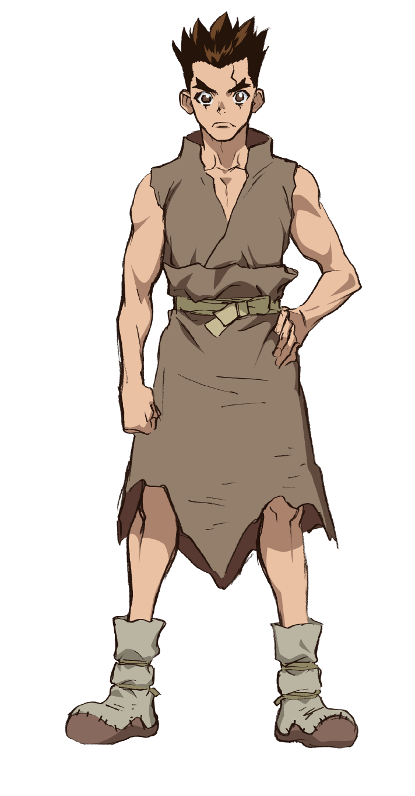Meilleur ami de Senku avant la pétrification. Il l’aidait et l’aide toujours avec sa capacité physique et son endurance hors pair. Il aime secrètement Yuzuriha mais ne lui avoue pas ses sentiments.
YUZURIHA OGAWA
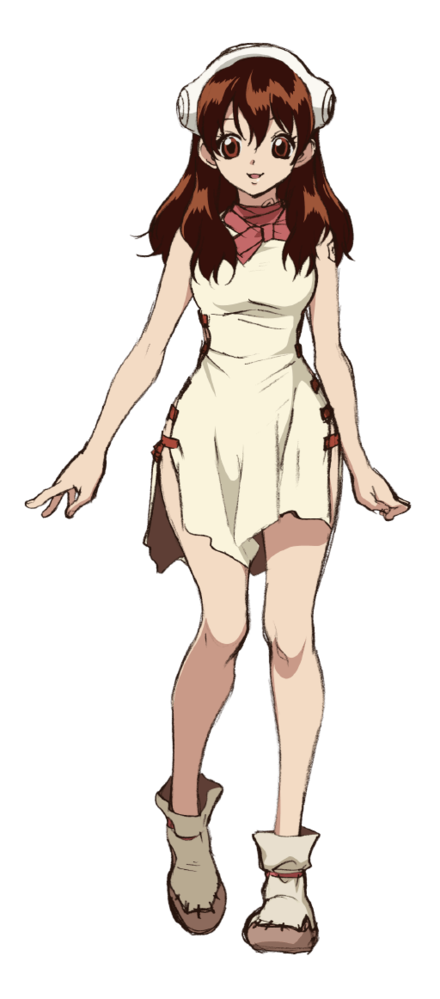Elle aidait Senku et Taiju avant la pétrification en suivant leurs projets et avec ses talents de couturière. Elle infiltrera "l'Empire" de Tsukasa avec Taiju afin d'aider secrètement Senku
TSUKASA SHISHIO
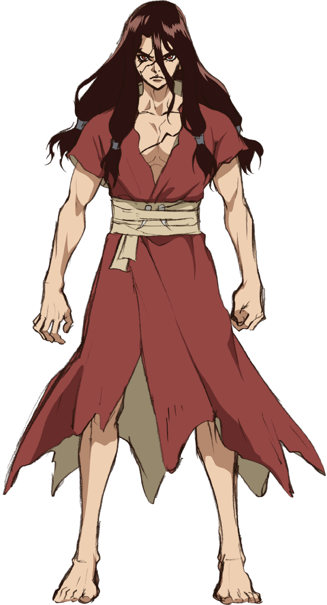Antagoniste du premier arc, il celui connu autrefois comme "le lycéen le plus fort de l'ordre des primates" . Lorsqu’il se dépétrifie, il souhaite rester à l’âge de pierre et vivre sans ennemis. Il s'opposera donc à la science de Senku.
KOHAKU
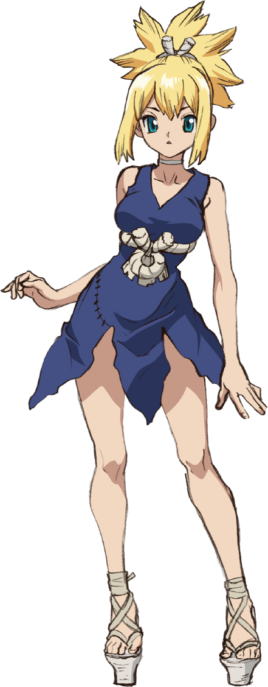Forte combattante du village Ishigami, possède excellente vue, elle une aide préciseuse pour Senku. Apres sa rencontre avec Senku, elle l'aidera à fabriquer un remède pour sa soeur, Ruri, et l'accompagnera pour la suite de son aventure.
CHROME
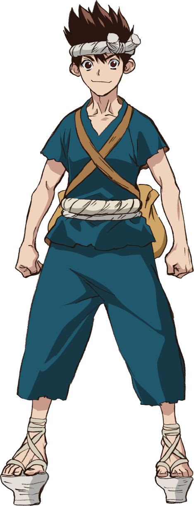Chrome est un garçon curieux et doté d'un grande ingéniosité et est un Scientifique/explorateur du village Ishigami, qui épaule Senku et le surprend parfois. Il aidera à la conception du remède pour Ruri envers qui il éprouve des sentiments.
SUIKA
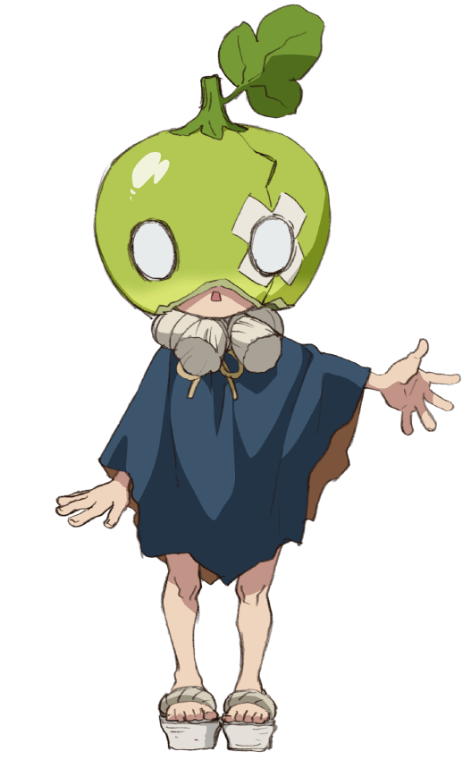Jeune détective du village qui porte une pastèque sur sa tête à cause de sa myopie. Elle veut absolument se rendre utile et aider les autres.
KASEKI
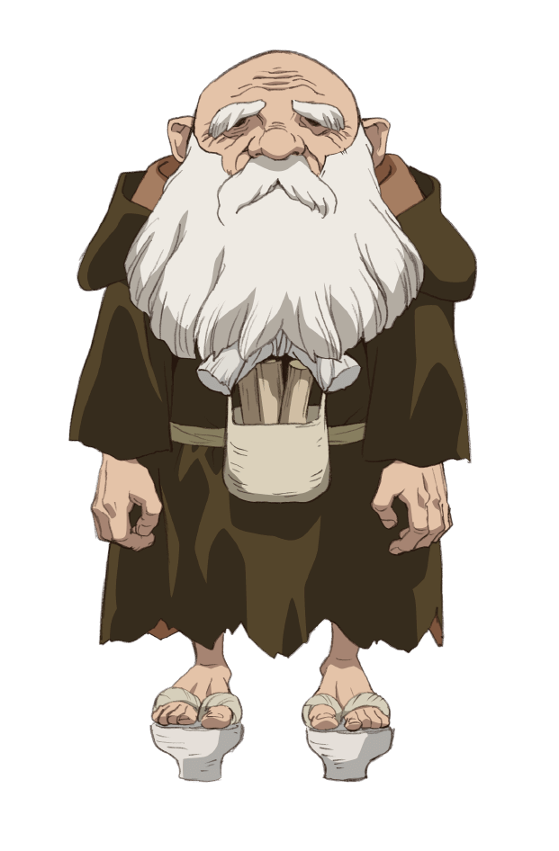Vieil homme du village. Il aide Senku et ses amis en étant le plus expérimenté dans l’art du bricolage.
RURI
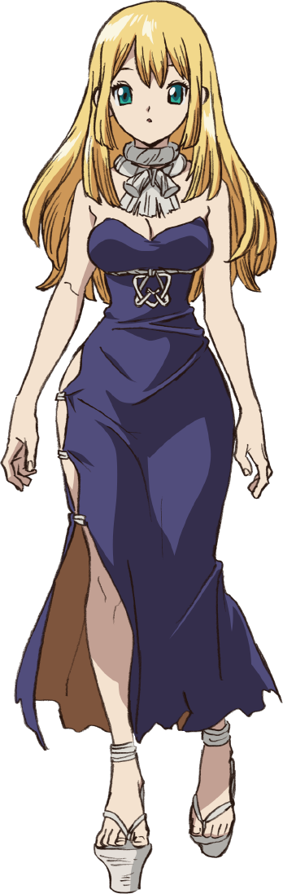Prêtresse du village atteinte d’une pneumonie. Après un tournoi, elle se marie à Senku mais divorcent immédiatement.
KINRO
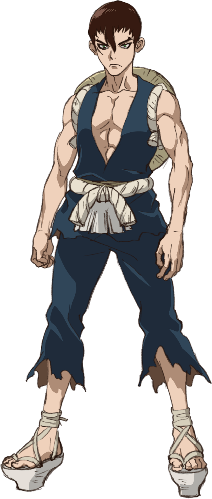Garde du village grand et sérieux accompagné de Ginro. Il cède cependant à la tentation lorsqu’on lui offre une lance en or.
GINRO
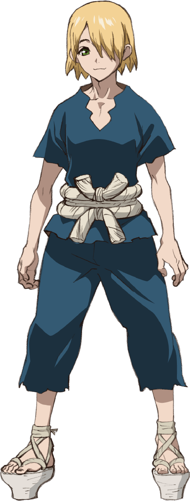Second garde du village. Contrairement à son partenaire, Ginro est stupide, ridicule et peureux.
GEN ASAGIRI
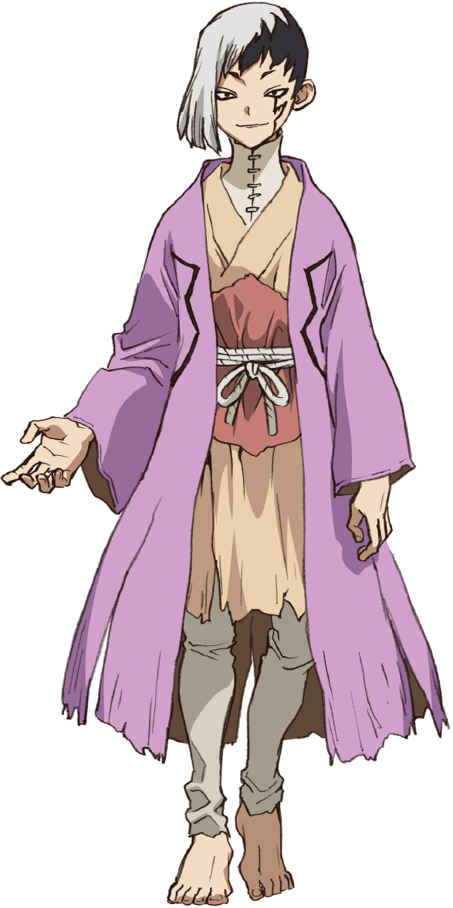Mentaliste qui utilise ses capacités pour jouer un double-jeu et convaincre ses ennemis et ses alliés. Revoir de nouvelles inventions qui datent de son époque le surprend toujours.
HYOGA
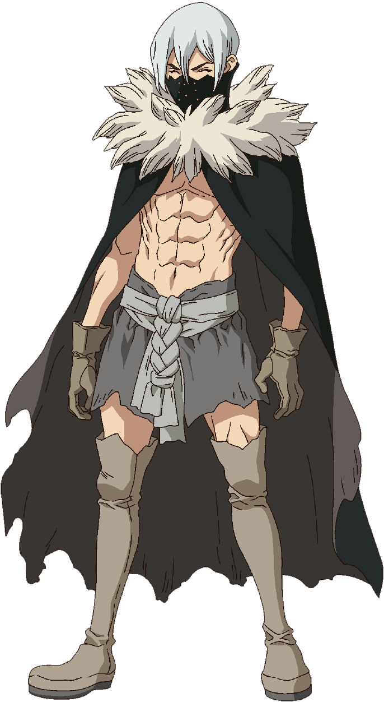Bras droit de Tsukasa et combattant fourbe et mystérieux avec sa lance tubulaire. Il est emprisonné après avoir trahi et blessé Tsukasa.
UKYO SAIONJI
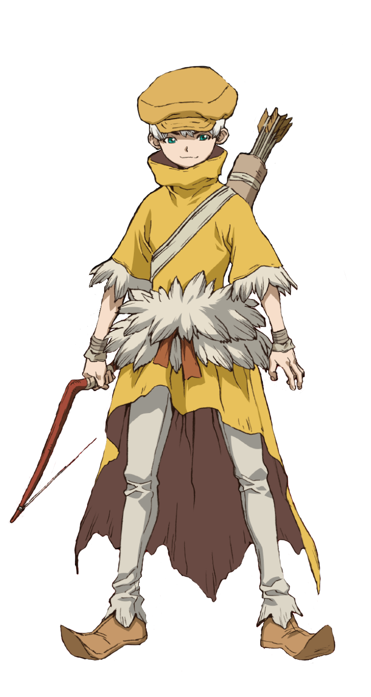Comme il travaillait dans un sous-marin, Ukyo est maintenant agile et un combattant redoutable caractérisé par son ouïe exceptionnelle. Il s’allie à Senku et les aide dans leurs aventures.
NIKKI HANADA
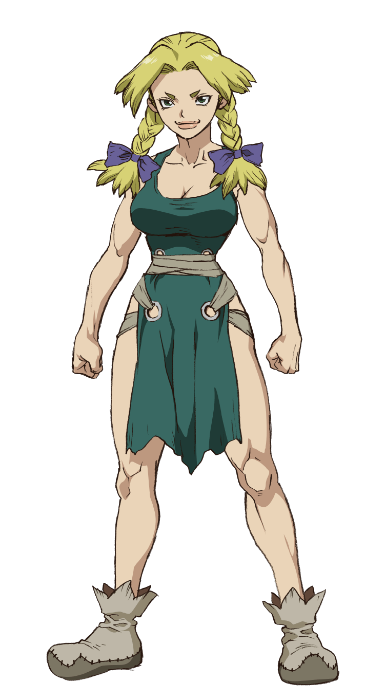Après avoir écouté une chanson de Lillian, Nikki décide de quitter le Royaume de Tsukasa et de rejoindre le Royaume de la Science.
YO UEI
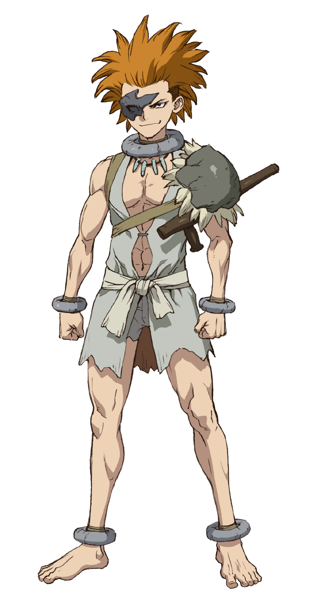Ancien policier et combattant du Royaume de Tsukasa, Yo est violent et vulgaire et disparait après que Chrome lui ait fait mal
HOMURA
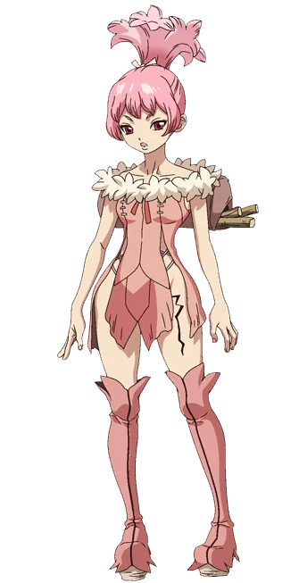Alliée de Hyoga, elle observe d’abord discrètement le Royaume de la Science puis trahit également Tsukasa et se fait emprisonner.
BYAKUYA ISHIGAMI

C’est le père de Senku, puisqu’il était dans l’espace lors de la pétrification. En rentrant sur Terre, il construit un village avec ses partenaires. Il laisse un message pour son fils plus de 3000 ans après.
LILLIAN WEINBERG

Collègue de Byakuya, Lillian était une chanteuse connue dans le monde entier qui laisse une de ses musiques pour les générations futures.
SHAMIL VOLKOV

Astronaute qui a aussi échappé à la pétrification. Un des meilleurs amis de Byakuya, il décède d’une pneumonie sans avoir mangé de ramens.
CONNIE LEE
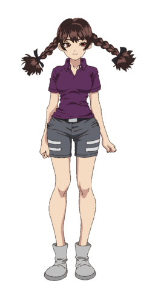Membre de l'équipe des astronautes, elle assiste à la pétrification. En rentrant sur Terre elle se marie avec Shamil et décède d'une pneumonie.
DARYA NIKITINA
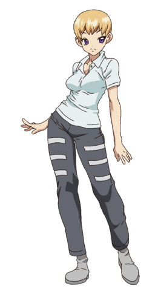Médecin à bord de la station spatiale avec son mari Yakov, elle essaye de sauver les autres membres en rentrant sur Terre mais décède en se perdant en mer.
YAKOV NIKITIN
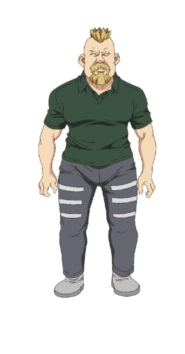Tout comme sa femme, il est médecin astronaute. D'un tempérament timide et calme, il aide à la fondation du village Ishigami et décède comme sa femme.